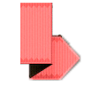

WELLCOME!
Добро пожаловать на страничку моей скромной
истории JavaScript разработки.
С этих строк официально начался мой путь
в мир JavsScript. Собственно в этой брошурке
рождались первые строчки настоящего чистого программерского
кода.
Вот так и начал пару строчками, но в ту ночь так и не лег
спать. Код не переставал литься из моих пальцев.
Я не мог остановиться. В ту же ночь воссоздал дизайн
страниц которые вы сейчас наблюдаете.
В общем приятного просмотра.
Возможно вам будет так же интересно посмотреть
с чего все начиналось, как и мне об этом
возможно вспомнить когда-то!